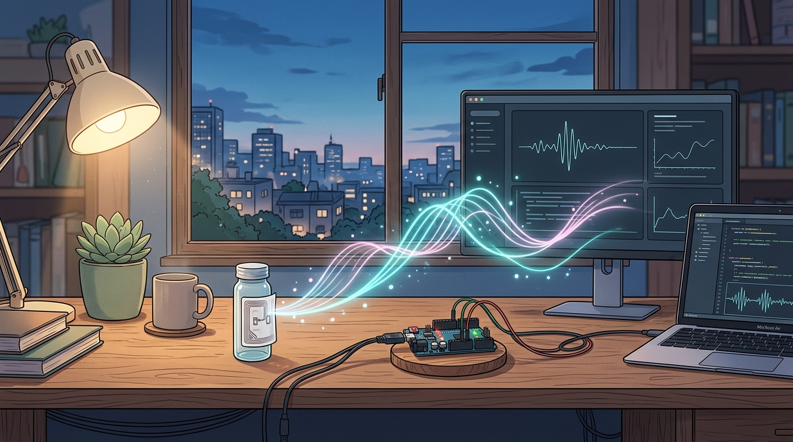

senior thesis

CSI & Battery-Free Biosensor AI
Non-invasive breath acetone detection via ESP32 & deep learning
hardware + ai
↩ back
Non-Invasive Diabetes Detection
Acquired real-time breath acetone data using ESP32 microcontrollers and battery-free RFID biosensor tags; filtered high-dimensional Wi-Fi CSI streams in Python & trained PyTorch models.
Python
PyTorch
ESP32
Wi-Fi CSI
RFID